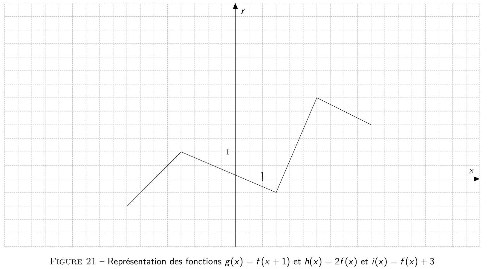
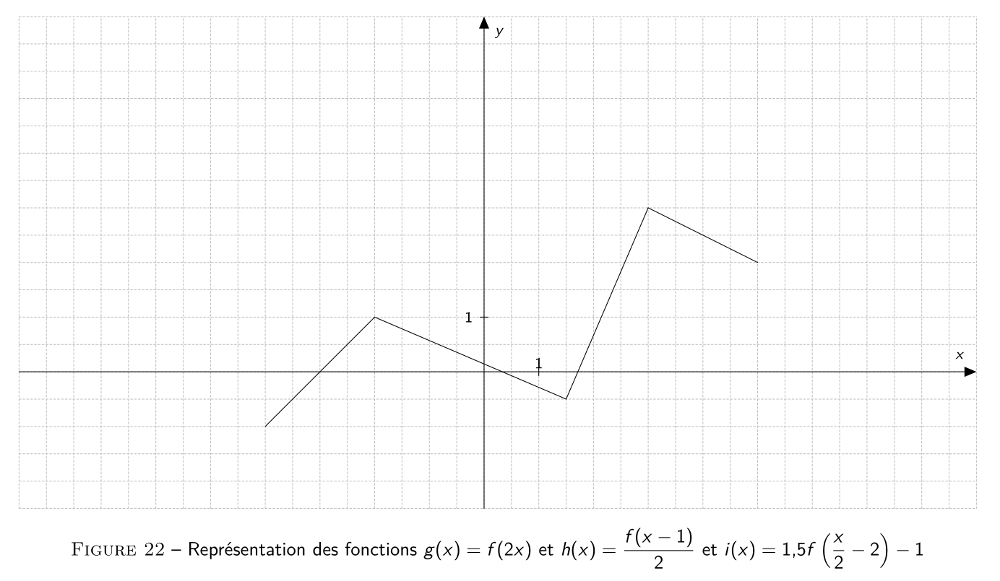

Séance d’exercices du 03/11/25
Énoncé: Un capital est placé au taux annuel de 10% à intérêts composés. Après combien de temps le capital aura-t-il doublé ?
Énoncé: Bactéries: doublement toutes les six minutes. \(N(t)\) est le nombre de bactéries à l’instant \(t\) (en minutes).
Énoncé: \(L(t)=M(1-C\text{e}^{-kt})\). \(M=200\) et \(C=0,956\), \(t\) en heures.
Énoncé: \(L(t)=M(1-C\text{e}^{-kt})\). \(M=200\) et \(C=0,956\), \(t\) en heures.
Énoncé: \(L(t)=M(1-C\text{e}^{-kt})\). \(M=200\) et \(C=0,956\), \(t\) en heures.
Énoncé: \(T(t)=(T(0)-A)e^{-kt}+A\). \(t\) en heures.
Données: \(T(9)=30\) et \(T(10)=26\) et \(A=20\). Question: trouver l’heure de la mort de la victime: chercher \(t\) tel que \(T(t)=37\).
Énoncé: \(\text{pH}=-\log([\text{H}_3\text{O}^+])\), si concentration faible en ions. \([\text{H}_3\text{O}^+]\) est en mol/L.
Énoncé: \(\text{pH}=-\log([\text{H}_3\text{O}^+])\), si concentration faible en ions. \([\text{H}_3\text{O}^+]\) est en mol/L.
Énoncé: \(\text{pH}=-\log([\text{H}_3\text{O}^+])\), si concentration faible en ions. \([\text{H}_3\text{O}^+]\) est en mol/L.
Énoncé: La distance entre la Terre et la Lune est en moyenne de 384 400km. J’ai devant moi une feuille de papier d’une épaisseur d’un millimètre. Si je peux la plier en deux autant de fois que je le souhaite, de sorte que l’une des moitiés de la feuille recouvre exactement l’autre moitié de la feuille, combien de pliages successifs minimum dois-je faire afin que l’épaisseur de la feuille pliée dépasse la distance séparant notre planète de son satellite naturel ?
Transformations horizontales (on transforme \(x\)):
Lorsqu’on enchaîne plusieurs transformations, il y a une priorité:
Note: ces priorités viennent des priorités des opérations (multiplications et divisions avant additions et soustractions)
Il y a un enchaînement de transformation délicat: celui de la forme \(g(x)=f(ax+b)\). Naîvement, on pourrait penser que \(g\) est obtenu à partir de \(f\) en faisant:
Voyons dans un cas concret ce que cela donne pour \(a=\dfrac{1}{2}\) et \(b=2\):
Il faut donc réécrire \(g(x)\):
\[ g(x)=f(ax+b)=f(a(x+b/a)) \]
Donc \(g\) est obtenu à partir de \(f\) par:
Énoncé: Représentez \(g\), \(h\) et \(i\).
Énoncé: Représentez \(g\), \(h\) et \(i\).
Énoncé: Représentez \(g\), \(h\) et \(i\).
Énoncé: Représentez \(g\), \(h\) et \(i\).
Énoncé: Représentez \(g\), \(h\) et \(i\).
Énoncé: Représentez \(g\), \(h\) et \(i\).